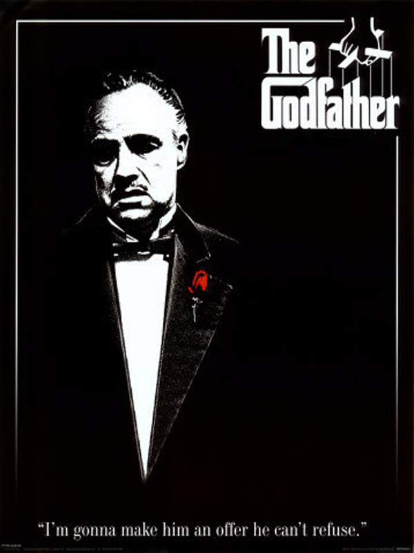
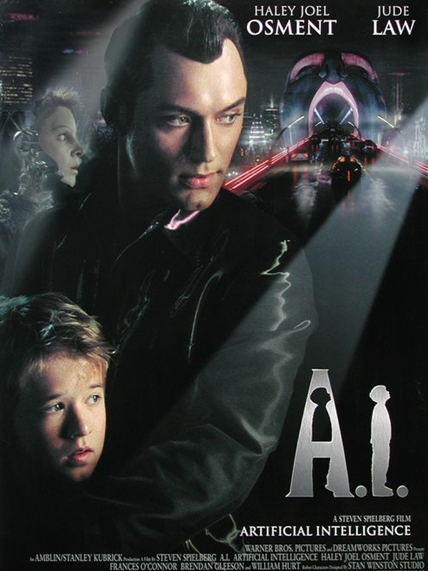
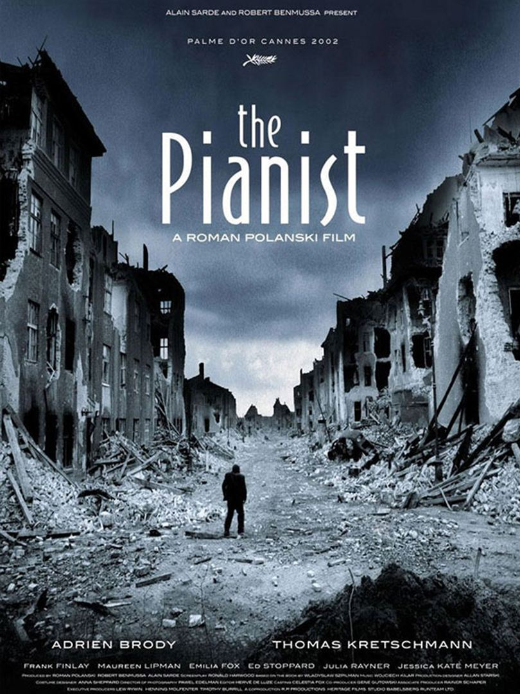
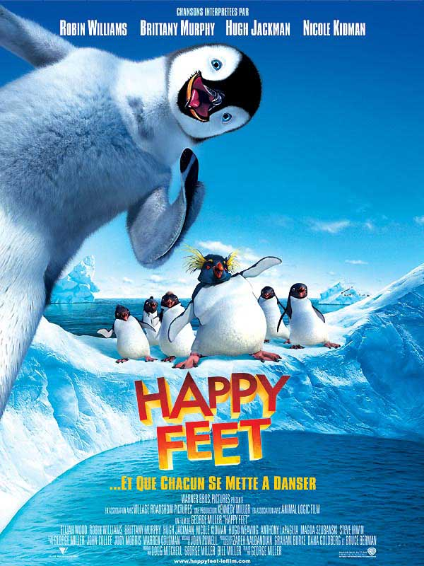
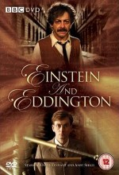
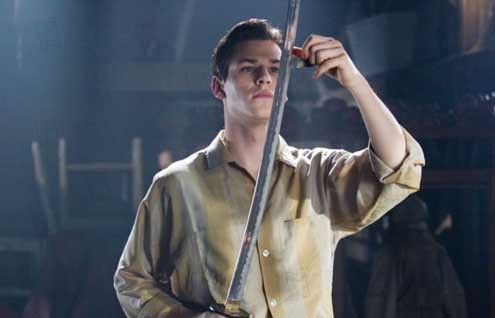
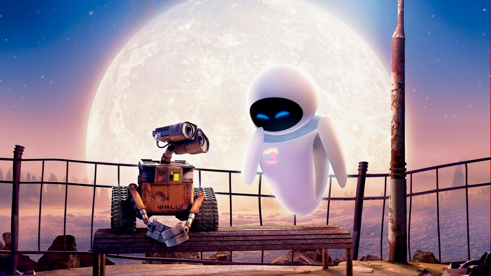

Yabancı Filmler
- Baba

Baba, 40’lar ve 50’lerin Amerika’sında, bir İtalyan mafya ailesinin destansı öyküsünü konu alıyor. Don Corleone’nin kızı Connie’nin düğününde, ailenin en küçük oğlu ve bir savaş gazisi olan Michael babasıyla barışır. Bir suikast girişimi, Don’u artık işleri yönetemeyecek duruma düşürünce, ailenin başına Michael ve ağabeyi Sonny geçer. Danışmanları Tom Hagen’in de yardımlarıyla diğer ailelere savaş açan Corleone ailesi, eski moda yöntemleri de değiştirmeye başlar.
- Yapay Zeka

11 yaşında, kendi halinde bir çocuk olan David'in diğerlerinin farklı olmasının bir nedeni vardır. Ancak tıpkı bir insan gibi davrandığı ve kendi de insan olduğuna inandığı için aslında yapay zekaya sahip bir robot olduğu kolayca anlaşılmamaktadır. David, çocuğu olmayan ailelere, canlı ve ciddi bir oyuncak olarak verilen bir araçtan başka hiçbir şey değildir. Bunun farkına varmasıyla birlikte, gerçekliğine kavuşmak isteyecek ve bunun için tehlikelerle dolu bir yolculuğa çıkacaktır. Spielberg'in, Kubrick'in bitiremediği projesini tamamlamak üzere kotardığı filminin başrollerinden biri Jude Law'a ait.
- Piyanist

Piyanist, İkinci Dünya Savaşı sırasında yaşanan gerçek bir dramı konu alır. Polonya’lı ünlü piyanist Wladyslaw Szpilman’ın anılarını anlattığı aynı isimli kitaptan sinemaya uyarlanan film, Nazi işgali altındaki Polonya’da yaşamanın imkansızlaştırıldığı bir dönemde, bir şekilde esir kampına gitmekten kurtulan ünlü piyanistin Varşova’nın kenar mahallelerindeki hayatta kalma mücadelesine odaklanır. Varoşlarda tam anlamıyla sefil bir hayat süren müzisyen, diğer halkla birlikte, kıtlığa ve aşağılanmalara maruz kalsa da kahramanca mücadele edecektir. Günü gelip oradan kaçma şansı bulduğundaysa başkentin harabelerine sığınacak, beklemediği bir anda gelen bir yardımla umudunu yeniden kazanacaktır. Film, En İyi Erkek Oyuncu dalında Oscar alan Adrien Brody'nin de filmografisinin en güçlü işlerinden biri.
- Neşeli Ayaklar

Bu sıcacık animasyon filmi, Mumble adında berbat bir sesi olan, sıra dışı bir penguenin hikayesini anlatır. Antartika’da bölgenin tüm penguenlerinin ruh eşlerine kendilerini ifade edebilmek üzere birer “Kalbe Seslenen Şarkıları” vardır. Ancak Mumble’ın hem sesi çok kötüdür hem de söz konusu şarkıyı bulup da ruh eşine bunu söyleyemediği sürece gerçek aşkı yakalaması olanaklı değildir. Mumble’ın farklı bir yeteneği vardır, o harika bir tap dansçısıdır! Annesi Norma Jean, onun bu yeteneğini çok sevimli bulurken, babası Memphis ise onun bir penguen olmadığını düşünür. Mumble’ın en iyi arkadaşı Gloria ise çevredeki en iyi şarkı söyleyen penguendir ve Mumble’ın bu değişik yeteneği ile başı derttedir. İmparator Penguen, Mumble’ın bu hallerinden ötürü onu toplumdan dışlar. Mumble, ilk kez evinden uzaklaştığında bambaşka bir ruha sahip penguenlerle tanışır. Adelie Amigos… Neşeli Ayaklar, 2007 Oscar Ödülleri’nde Yılın En İyi Animasyon ödülünü aldı.
- Einstein and Eddington

Dünyanın en ünlü iki bilimadamı karşı karşıya. Doctor Who’nun yıldızı David Tennant’ın İngiliz bilimadamı Sir Arthur Stanley Eddington’ı, The Lord of the Rings (Yüzüklerin Efendisi) serisinin Gollum’u Andy Serkis’in ise Albert Einstein’ı canlandırdığı Einstein and Eddington , Einstein’ın ünlü Genel Görelilik Kuramı’nın çıkış öyküsünü anlatıyor. Filmde iki bilimadamı arasındaki ilişki irdelenirken, arka planda Birinci Dünya Savaşı devam ediyor.
- Hannibal Doğuyor

Sinema tarihinin en vahşi seri katillerinden biri olan ’yetişkin’ Hannibal Lecter’in şimdi de gençlik yıllarına dönmenin zamanı...
Litvanya’daki bir Sovyet yetimhanesinde büyüyen Hannibal, çevresindeki bütün çocuklardan farklıdır. Nitekim bu farklılığı, hiçbir çocukla anlaşamaması şeklinde de kendisini gösterir. Fakat yetimhanede yaşadığı sorunlar, sadece arkadaşları ile anlaşamaması değildir. Geceleri kız kardeşi ile ilgili gördüğü kabuslar da hayatını cehenneme çevirir. Artık, tahammül edemediği bu yetimhaneden kaçma vakti gelmiştir.
Ülkeden çıkarak Paris’te yaşayan amcasının yanına giden Hannibal, amcasının ölmüş olduğunu öğrenir. Ama amcasının karısı, kendisini yanına alır ve ona yemek, müzik ve resim dersleri vererek eğitimine katkıda bulunur. Ama Hannibal için geçmiş, derine gömemeyeceği kadar içine işlemiştir. Artık düşündüğü tek bir şey vardır: Açlıktan ölmemek için kız kardeşlerini yiyen savaş suçlularından intikam almak!
- Wall-E

Wall-E, günümüzden çok uzak bir gelecekte geçmektedir. Filmde, insanoğlu aşırı kirlenme sebebiyle Dünya’yı terk edip başka bir gezegende yaşamaya başlamıştır. Çöplerle çevrili dünyayı temizleme görevi sevimli bir robota, Wall-E’ye verilir. İnsanoğlunun bıraktığı çöplerden kendine yeni bir dünya yaratan yalnız Wall-E’nin yalnızlığı, başka bir robot olan Eve’nın gelmesiyle son bulur. İki sevimli robotun arasında filizlenen dokunaklı ilişki türlü zorluklara rağmen direnmeye ve ayakta kalmaya çalışır. Film tüketim çılgınlığına ve insan türünün kendi yaşadığı doğal çevreye verdiği zararlara dair önemli yorumlar yaparken geleceğin insanlığını teknolojinin esiri olmuş, tembellikten tükenmiş bir profilde çizer. Pixar stüdyolarından çıkan Oscar ödüllü Wall-E sinema tarihinin en önemli animasyonlarından biri olmanın yanısıra önemli bir bilimkurgu filmi olarak kabul ediliyor.